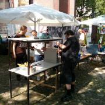
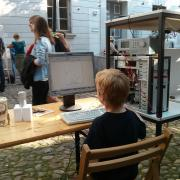

{% block content %}
{% filter markdown|typogrify -%}

Wir als Verein waren auf dem freiGang vertreten. Der
fand vom 3. Juli bis 6. Juli 2013 im Rahmen des Oldenburger Kultursommers
statt. Wir haben täglich zwei Workshops angeboten, u.a. das Löten eines
LED-Cubes, und haben am Stand jeden Tag von 16.00 Uhr bis zum Ende den Verein,
das Fablab und den Hackspace präsentiert.

Mit unserem 3D-Drucker, LED-Cube, Styropor-Schneider, Useless Machine und
vielen Beispielen aus dem Lasercutter und 3D-Drucker konnten wir die Besucher
nachhaltig beeindrucken.
Mehr Fotos findet ihr im Zugehörigen Album.
{%- endfilter %}
{% endblock content %}